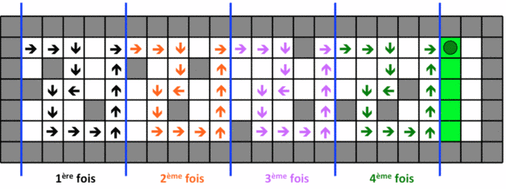
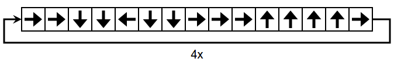
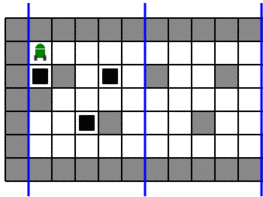
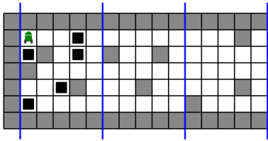
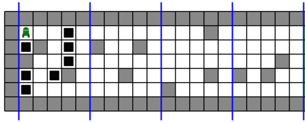
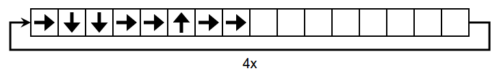
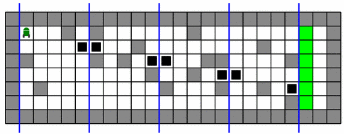
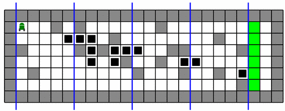
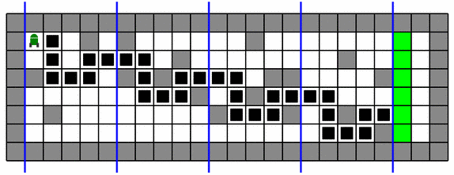

Solution



Le robot traverse 4 zones, délimitées par les traits bleus.
La même séquence de déplacements est utilisée pour traverser chaque zone. Il faut donc que le chemin formé par le déplacement du robot dans la première zone permette d'éviter non seulement les obstacles de cette première zone, mais également les obstacles se trouvant dans les autres zones.
Pour nous aider à trouver la bonne séquence de déplacement, on peut marquer les cases à éviter, en cliquant pour poser des blocs noirs. Pour commencer, on place des blocs noirs dans la première zone, de sorte à marquer les positions correspondant aux blocs se trouvant dans la seconde zone.

On continue de la même manière, en ajoutant des blocs noirs dans la première zone pour reproduire les positions des blocs de la troisième zone.

Enfin, on ajoute des blocs dans la première zone pour reproduire les positions des blocs de la quatrième zone.

À ce stade, on observe alors qu'il n'y a qu'un seul chemin possible : celui qui passe par les cases blanches restantes dans la première zone.

Pour trouver la solution, on peut tout d'abord remarquer, en observant de près le passage de la première à la second zone, qu'on va être obligé de se décaler d'une ligne d'une zone à l'autre (les zones étant séparées par les traits bleus). On met des blocs noirs aux endroits par lesquels on est obligé de passer :

En observant en détails la seconde zone, on peut compléter des éléments du chemin.

Il n'y a alors plus qu'à vérifier que la séquence trouvée peut bien être répétée 4 fois.

C'est de l'informatique !
Dans ce sujet, il s'agit de programmer le robot, à l'aide d'une courte séquence d'instructions que le robot va répéter.